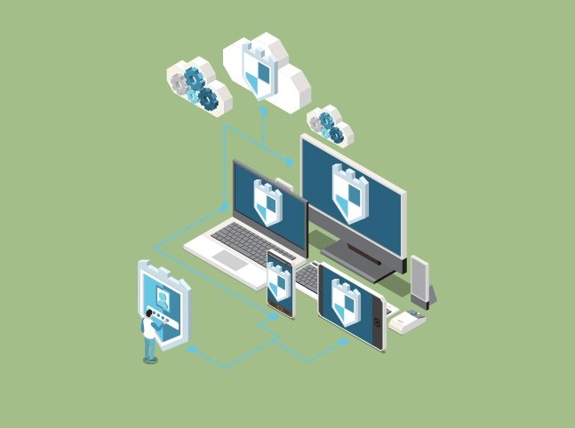

Labs & Beveiliging
Labs rond netwerk-, endpoint- en cloudbeveiliging
Leer cyberaanvallen detecteren, stoppen en voorkomen. Je combineert ethical hacking met beveiligingsarchitectuur, monitoring en incident response voor netwerken, servers en cloud.

Werk met SOC-tools, SIEM, forensics en red-teamplatformen onder begeleiding van experts.
Intake omvat een security mindset-check, logische testen en kennismaking met basisnetwerken.
Je analyseert kwetsbaarheden, voert pentests uit en bouwt verdedigingsmechanismen. We koppelen blue team, red team en governance zodat je end-to-end beveiligt.
Je leert securityprogramma's opzetten die rekening houden met mensen, processen en technologie. We werken met frameworks zoals NIST, CIS en ISO 27001.
Labs rond netwerk-, endpoint- en cloudbeveiliging
Threat hunting in een gesimuleerde Security Operations Center
Incident response oefeningen met forensics en rapportering
Stage bij bedrijven, overheid of SOC-partners
Elk onderdeel combineert theorie met scenario's in het lab. Je werkt met actuele tools, frameworks en casefiles.
Firewalls, intrusion detection, endpoint protection en secure access.
Pentesting tools, vulnerability scanning, exploits en social engineering.
Azure Sentinel, AWS Security Hub, web app firewalls en API-beveiliging.
Risk management, policies, audits en GDPR/NIS2-compliance.
Heb je specifieke behoeften om te kunnen deelnemen aan de selectie of opleiding? Bijvoorbeeld omwille van een fysieke beperking. Laat het ons weten.
Campus Rouppeplein 16, 1000 Brussel. Deze locatie is zeer goed bereikbaar met het openbaar vervoer.
Boek je intake en ontdek hoe jij het verschil maakt als cyber security engineer, SOC-analist of incident responder.
Neem contact op en ontdek hoe we kunnen samenwerken rond trajecten, stages of coaching.